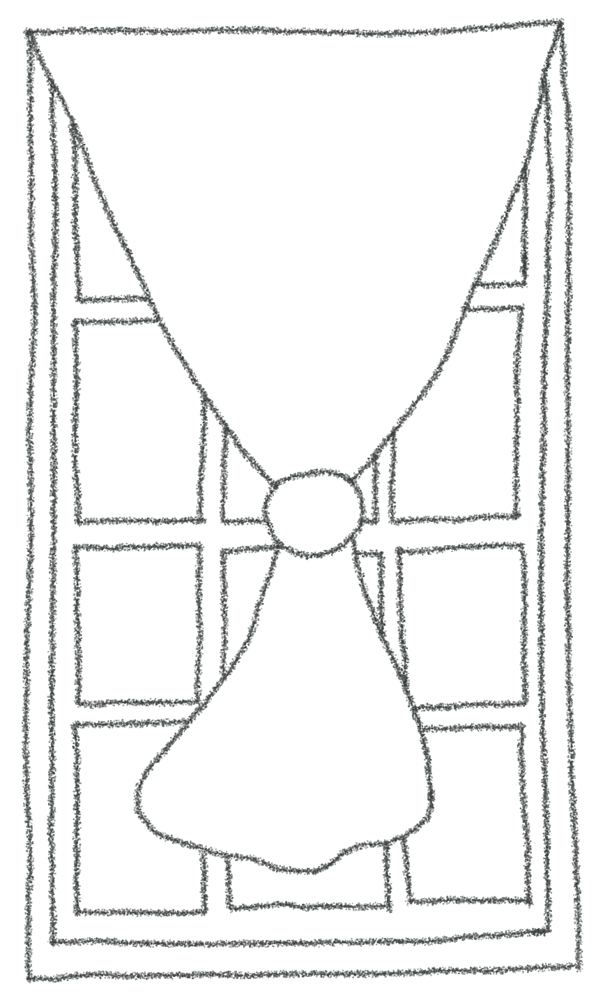

Work Experience
-
Assistant Data Scientist, The New York Stem Cell Foundation
- Developed a deep learning tool to segment nuclei with ~95% accuracy and a cell count difference of ~5
- Identified fluorescent markers to detect Parkinson's disease mutations with >90% accuracy
- Managed tight deadlines and tasks for various scientific publications and research teams
- Communicated monthly analysis and project updates to nonexpert and shareholder audiences
-
Research Assistant, Human Computation and Visualization Lab, Smith College
- Conducted literature review of data literacy pedagogy for Ph. D. candidate at Tufts University
- Developed an experiment platform to measure cognitive load demanded from statistical reasoning
- Analyzed 29,000+ item dataset to develop VAST Challenge in 2022

-
Teaching Assistant, Engineering for Climate Resilience, Smith College
- Designed and facilitated lesson plans on Arduino, C++, and college skills
- Mentored high school students on sustainable civil engineering proposals to climate-crisis-driven problems
-
Research Assistant, Human Computation and Visualization Lab, Smith College
- Conducted literature review of data literacy pedagogy for Ph. D. candidate at Tufts University
- Developed an experiment platform to measure cognitive load demanded from statistical reasoning
- Analyzed 29,000+ item dataset to develop VAST Challenge in 2022
-
Full-Stack Developer, Valet Bike, Smith College
- Conducted user research, executed wireframing and UX design according to Universal Design Principles
- Used Ruby on Rails framework, SQL Database, Leaflet, and Stripe APIs
- Allows users to view bike locations on a map, check out and pay for bikes, create and edit account information
- Built front end in html, CSS, and Javascript
Art Experience
-
Founder, MESH: Fiber Arts Collective
- Organized monthly meetups for over 150 fiber artists to share skills and projects
- Identified collaborations to acquire an art studio, event space, caterer, and app partnership
- Raised $1,974 to benefit humanitarian causes through a community art project and raffle
- Developed a social media presence to create viral content and increase community engagement
-
Gallery Assistant, Rockella Studios
- Handled transportation, unpacking, and secure installation/deinstallation of delicate art pieces
- Collaborated with artists and curators to execute spatial arrangements, mounting, and lighting setups for
exhibitions
-
Archivist, Northampton Pride Oral Histories, Forbes Library
- Led meetings with archivists at Forbes Library and the interviewee to negotiate and secure ethical release forms
- Conducted a review of local archives and personal records to develop 72 targeted interview questions
- Edited video, audio, and transcript from the 2.5-hour interview session to produce a polished final product